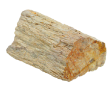
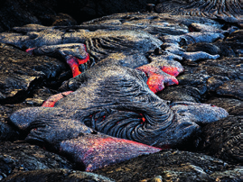
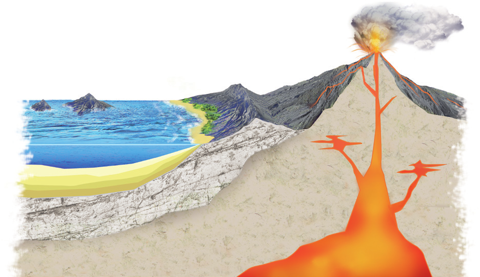
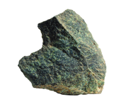

Las rocas son agregados naturales de uno o más tipos de minerales, mineraloides o restos de seres vivos que están presentes en la superficie de la geosfera.
Se clasifican, según su origen, en rocas sedimentarias, magmáticas e ígneas y metamórficas.
Se originan a partir de materiales procedentes de otras rocas o de restos de seres vivos acumulados en una cuenca de sedimentación.
Se forman al enfriarse y solidificarse el magma. Si el proceso es lento, aparecen cristales de gran tamaño; si es rápido, los cristales son pequeños o no existen.
Resultan de la transformación de los minerales de otras rocas debido al aumento de la presión y de la temperatura, sin que se produzca su fusión.
El ciclo de las rocas es el proceso por el cual las rocas de la corteza terrestre sufren cambios, a consecuencia de los cuales se transforman en otras rocas diferentes. De este modo, cualquier roca puede experimentar procesos magmáticos, metamórficos o sedimentarios, dando lugar a una roca magmática, metamórfica o sedimentaria, respectivamente.
